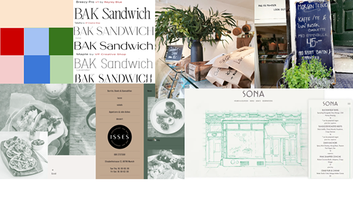
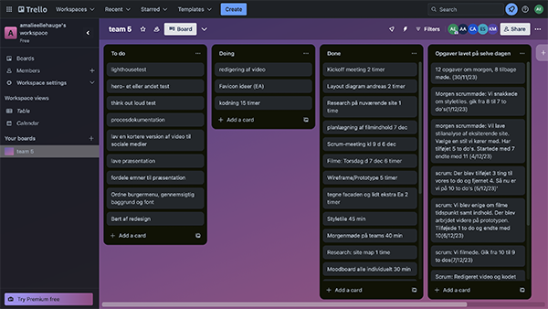
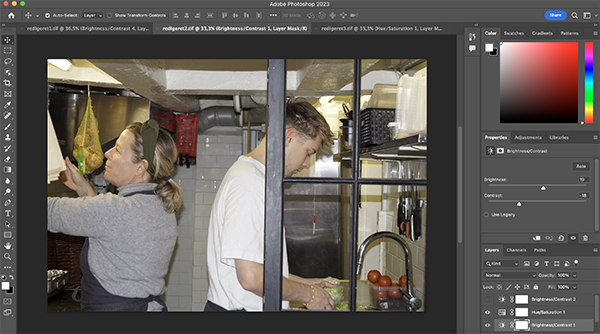

TEMA 05
VIRKSOMHEDSSITE
VIRKSOMHEDSSITE
VIRKSOMHEDSSITE


I tema 05 blev vi introduceret til videoproduktion, med formålet at ende ud med to opgaver- videosite og virksomhedssite. Til virksomhedssitet skulle vi udvælge en virksomhed og udarbejde en ny side til dem, med fokus på brugerforståelse, bruger test, brugeroplevelse, samt frontend-udvikling.
Vi skulle arbejde i teams, hvor vi lærte om hvordan man udvikler den mest optimale arbejdsproces. Til dette blev vi introduceret til hjemmesiden Trello, hvor man kan skrive arbejdopgaver, samt følge med i hvor langt i processen man er. Vi blev samtidig introduceret til scrum- metoden, som vi brugte til at overholde en dagsorden, samt at afprøve de forskellige roller der findes i et samarbejde. GitHub er en platform som vi også fik introduceret i forlængelse af teamsamarbejde, så vi kunne dele og skive på en fælles fil.
Vi udførte også en BERT-test for at undersøge brugeroplevelsen. Der lærte jeg hvor vigtigt fremvisningen af testen er, hvilket jeg vil fokusere på næste gang vi skal lave testen
Se løsningen hér
